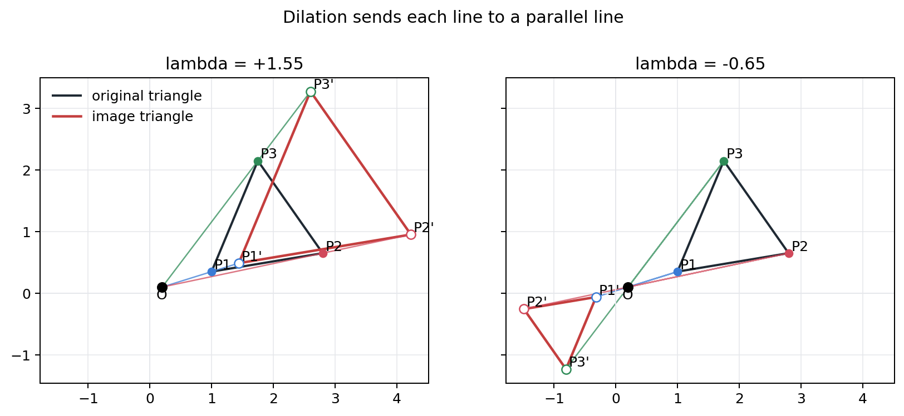
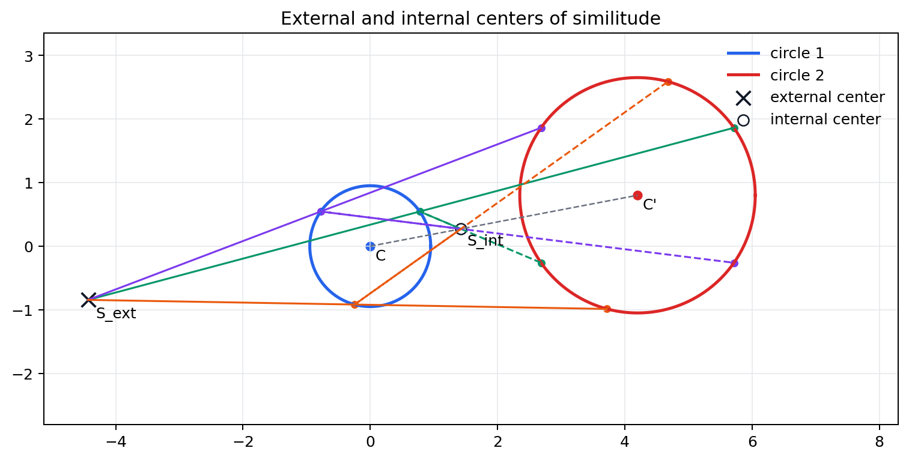
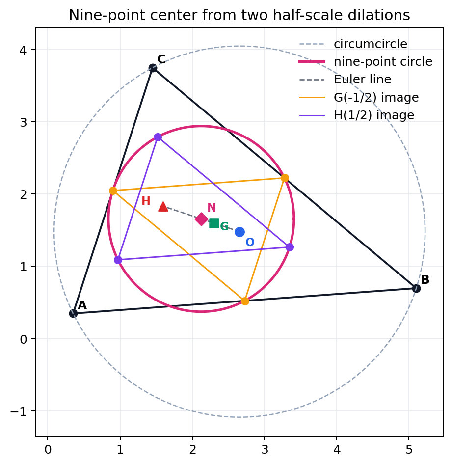
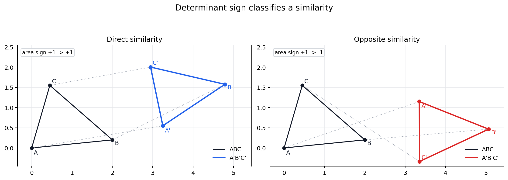
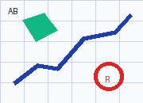
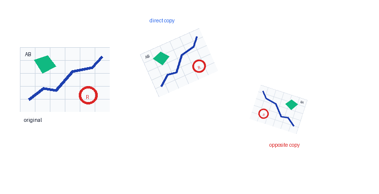

Source Span
Printed pages 67-76; PDF pages 85-94.
Core Invariant
All length ratios are preserved, and every angle measure is preserved.
New Freedom
Similarity is broader than congruence because a common scale factor may change size.

Similarity preserves angles and scales all lengths by one factor, while allowing the figure to grow, shrink, rotate, translate, or reverse orientation.
Printed pages 67-76; PDF pages 85-94.
All length ratios are preserved, and every angle measure is preserved.
Similarity is broader than congruence because a common scale factor may change size.

Move points along rays from a center with signed ratio \(\lambda\).
External and internal centers of similitude align corresponding circle points.
A half-scale viewpoint explains six concyclic points.
One fixed point supports rotation plus scaling.
Direct maps keep oriented area sign; opposite maps reverse it.
Direct and reflected synthetic copies make the determinant visible.
$$P'=O+\lambda(P-O)$$
1.55
Expansion from the center.
-0.65
Cross-center shrink with parallel image lines.
Length-scale residual \(4.44\times10^{-16}\); parallel cross residual \(8.88\times10^{-16}\).
$$S_{\rm ext}={r_1C_2-r_2C_1\over r_1-r_2},\qquad S_{\rm int}={r_1C_2+r_2C_1\over r_1+r_2}$$
\((-4.433,\,-0.844)\), scale \(1.947\).
\((1.425,\,0.271)\), scale \(-1.947\).
Maximum residuals are \(1.78\times10^{-15}\) and \(4.44\times10^{-16}\).


$$N={O+H\over2},\qquad R_9={R\over2}$$
2.568
1.284
Midpoint \(OH\) residual is \(0.0\); side-midpoint dilation residual is \(6.28\times10^{-16}\).
$$z'=az+b,\qquad z_0={b\over1-a}$$
0.78
38.0 deg
\((1.612,\,1.101)\) with residual \(0.0\).
Scale residual \(3.11\times10^{-15}\); angle residual \(4.22\times10^{-15}\) radians.

$$\det(a z)=a_r^2+a_i^2,\qquad \det(a\overline z)=-(a_r^2+a_i^2)$$
1.274
Same sign as the base triangle.
-1.274
Orientation is reversed.
Both length-scale residuals are below \(3.34\times10^{-16}\), so orientation must be checked separately.
Declared scale \(0.72\); handedness is preserved.
Declared scale \(0.55\); the synthetic map is reflected.
Base image size is \(180\times130\); canvas pixel standard deviation is \(21.687\).


All distances are fixed. This is the scale-one special case of direct or opposite similarity.
Angles survive and every length is multiplied by one common positive scale factor.
Parallelism survives, but angles and equal scale in all directions need not survive.
$$z\mapsto az+b$$
Rotation, uniform scaling, and translation preserve orientation.
$$z\mapsto a\overline z+b$$
Reflection or conjugation reverses orientation while preserving angle sizes.
One center and one ratio move every point; lines map to parallel lines unless they pass through the center.
Two circles have external and internal centers of similitude with opposite scale signs.
The center \(N=(O+H)/2\) and radius \(R/2\) arise by half-scale maps.
A direct spiral similarity has a fixed point; determinant sign separates direct and opposite maps.